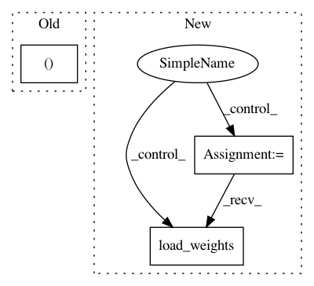

4893c42a85f8919eb2e0251e545f85eaae05b948,posewarp_test.py,,train,#Any#Any#,17
Before Change
//rnn = networks.warp_rnn(params,generator)
"""
X,Y = next(feed)
sio.savemat("0.mat",{"X": X[0], "Y": Y, "pose": X[1]}),
After Change
threads = tf.train.start_queue_runners(coord=coord)
with tf.device(gpu):
vgg_model = VGG19(weights="imagenet",include_top=False,input_shape=(256,256,3))
networks.make_trainable(vgg_model,False)
generator = networks.network_warp(params,vgg_model)
//generator.summary()
//discriminator = networks.discriminator(params)
//gan = networks.gan(generator,discriminator,params)
//gan.load_weights("../results/networks/gan/5000.h5")
//discriminator.compile(loss="binary_crossentropy",optimizer=Adam(lr=1e-4))
//generator.load_weights("../results/networks/L2+VGG_0.001/100000.h5")
//generator.load_weights("../results/networks/lifting/50000.h5")
generator.load_weights("../results/networks/golf+lifting/17500.h5")
//mask = Model(inputs=generator.inputs,outputs=generator.get_layer("mask").output)
//generator.summary()
//X,Y = next(feed)
In pattern: SUPERPATTERN
Frequency: 3
Non-data size: 3
Instances
Project Name: balakg/posewarp-cvpr2018
Commit Name: 4893c42a85f8919eb2e0251e545f85eaae05b948
Time: 2017-05-11
Author: balakg@thousandeyes.csail.mit.edu
File Name: posewarp_test.py
Class Name:
Method Name: train
Project Name: balakg/posewarp-cvpr2018
Commit Name: 2cc74a324cc84821f3fbb793630f7328e54bd87e
Time: 2017-05-08
Author: balakg@thousandeyes.csail.mit.edu
File Name: posewarp_test.py
Class Name:
Method Name: train
Project Name: kermitt2/delft
Commit Name: df531d0c9e5457a8731d268f0596fc07e45cd98b
Time: 2018-04-29
Author: patrice.lopez@science-miner.com
File Name: textClassification/wrapper.py
Class Name: Classifier
Method Name: load